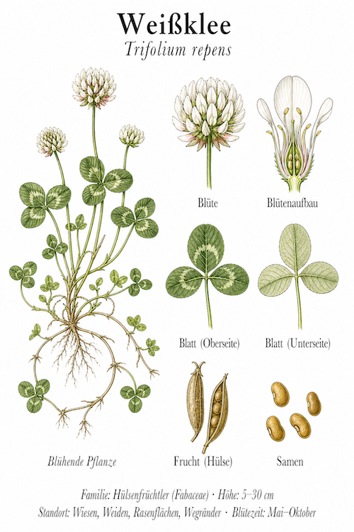
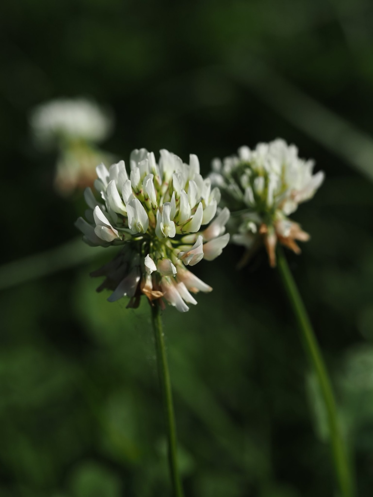

Kleinblättrige Trittweiche aus jeder Wiese — der heimliche Star der Bienenvölker.


Bienenweide par excellence
Während Rot-Klee nur Hummeln bedient (zu lange Blütenröhren), ist Weiß-Klee die Bienen-Pflanze schlechthin. Jede einzelne Blüte ist klein genug, dass auch Honigbienen-Rüssel an den Nektar kommen. Und davon hat er viele: Eine einzige Pflanze kann pro Saison Tausende Einzelblüten produzieren. Imker schätzen Weiß-Klee-Wiesen besonders — der Honig ist hellgolden, mild und Premium-Qualität.
Trampling-Talent
Wer Weiß-Klee gestern noch flach gedrückt hat, sieht ihn heute schon wieder aufrecht. Die niedrigen, ausläuferartigen Stängel sind extrem zäh und springen nach Tritten zurück in Form. Genau deshalb wächst er auf Sportplätzen, Schulhöfen und vielbegangenen Wegen — wo die meisten anderen Pflanzen längst aufgegeben haben.
Wissenswertes & Merksätze
Erkennen leicht gemacht
Niedriger, kriechender Wuchs mit Ausläufern. Blätter dreizählig (klee-typisch), oft mit weißem „V“ auf jedem Blättchen. Blütenköpfchen kugelig-rundlich, weiß mit zarter rosa Tönung, später leicht rotbraun werdend (verblühte Blüten).
Stickstoff-Lieferant für jede Wiese
Wie alle Schmetterlingsblütler hat Weiß-Klee Knöllchenbakterien an den Wurzeln, die Luftstickstoff binden. Jede Klee-Wiese düngt sich also selbst — ein Trick, den die Landwirtschaft seit Jahrhunderten nutzt. Auf einem Hektar Weiß-Klee werden pro Jahr ca. 100–200 kg Stickstoff fixiert.